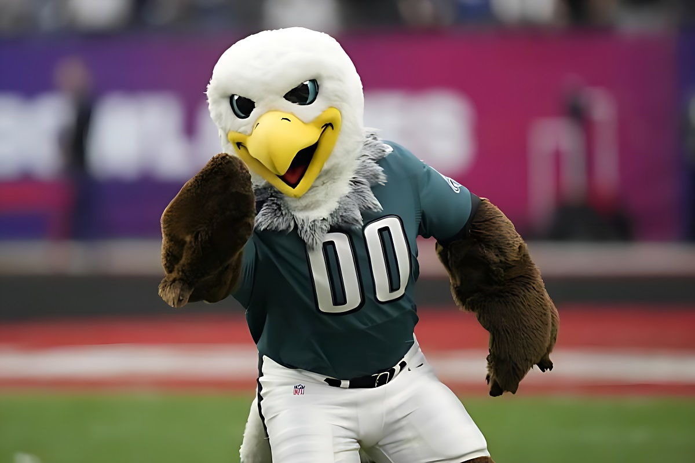

The Philadelphia Eagles are a professional American football team based in Philadelphia, Pennsylvania.
They compete in the National Football League (NFL) as a member club of the league's National Football Conference (NFC) East division.
The team was established in 1933 as a replacement for the bankrupt Frankford Yellow Jackets, and they have since become one of the most storied franchises in NFL history.
The Eagles have won multiple division titles and have made several appearances in the Super Bowl, winning their first championship in Super Bowl LII in 2018.
The team's colors are midnight green, silver, black, and white, and they play their home games at Lincoln Financial Field.
The Eagles have a passionate fan base known for their enthusiastic support and unique traditions, including the iconic "Eagles' Nest" section of the stadium.
Mascot
The Philadelphia Eagles' mascot is named "Swoop." Swoop is a large, anthropomorphic bald eagle who wears the team's colors and jersey.
He is known for his energetic and entertaining presence at games and events, often engaging with fans, performing stunts, and leading cheers to rally support for the team.
Swoop has become a beloved figure among Eagles fans and is an integral part of the team's identity and game-day experience.

Team Colors
Team Colors: Green, silver, black, and white.
Superbowl Titles
Super Bowl LII (2018): The Eagles defeated the New England Patriots 41-33.
Super Bowl LIX (2025): The Eagles defeated the Kansas City Chiefs 40-22.